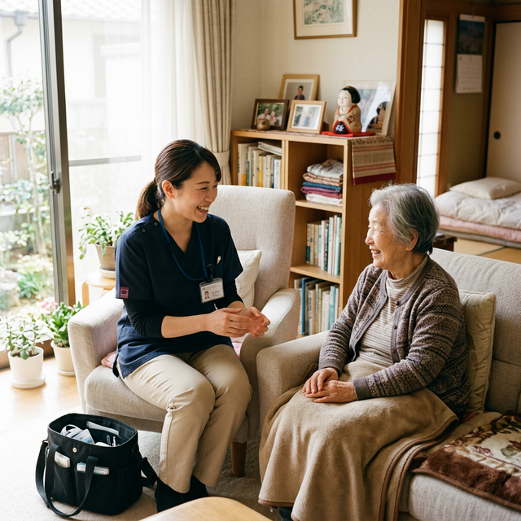
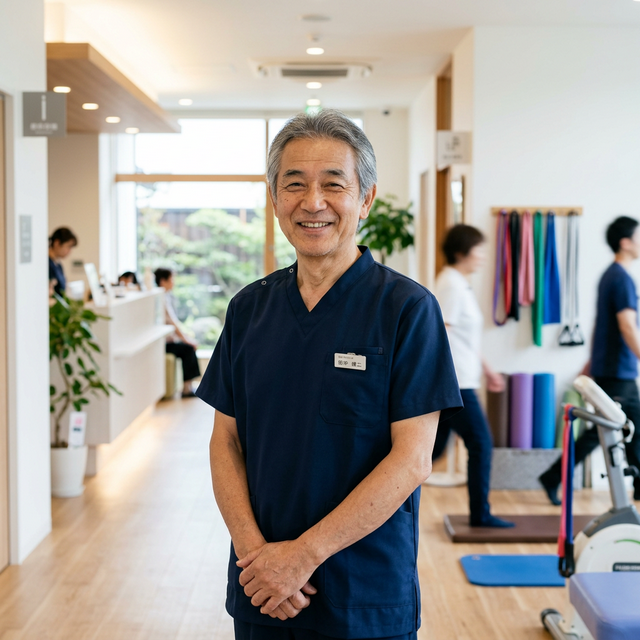
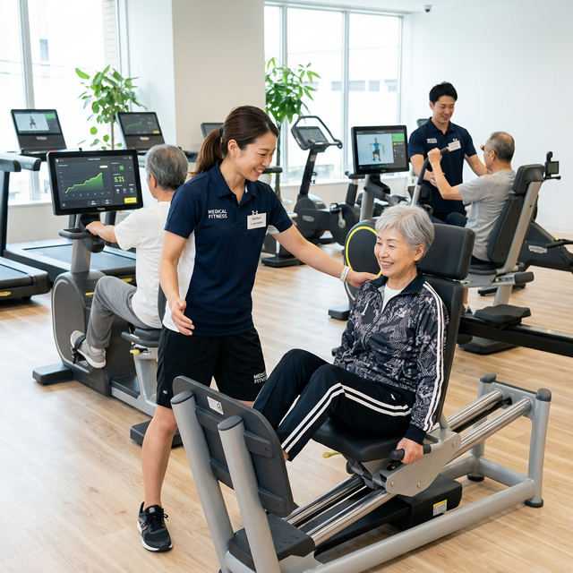

丸山 裕久
新卒入社 → 副院長 → 院長（勤続15年）
「最初は訪問施術に不安もありました。でも患者さんと長く関わり続けるうちに、これが自分の天職だと気づいた。気づけば院長になっていました。スタッフが笑顔で働ける職場にするのが、今の私のミッションです。」
Our Numbers
長く働ける環境には理由があります。
私たちの仕事は単なるサービス提供ではありません。患者様・利用者様・ご家族・医療機関・介護事業所——多くの方と連携しながら地域の健康を支える仕事です。
将来的には社会的処方の拠点として、地域医療の一部を担う存在になることを目指しています。

現在、以下の3職種で新しい仲間を募集しています。
訪問施術を中心に患者様の生活を支える
リハビリ型運動施設で高齢者の健康づくりを
女性限定フィットネスでコミュニティを支える
べるつりーには、多様なキャリアパスがあります。
「最初は訪問施術に不安もありました。でも患者さんと長く関わり続けるうちに、これが自分の天職だと気づいた。気づけば院長になっていました。スタッフが笑顔で働ける職場にするのが、今の私のミッションです。」

「会社がケアマネの資格取得を全力で応援してくれました。70歳の今も毎日患者さんのところへ行っています。学び続けることを恥ずかしいと思わなくていい——そういう職場です。」
「週4日勤務でもう一つの仕事も続けています。入社前から副業OKで相談に乗ってもらえたのが決め手でした。新人のうちは必ず誰かと一緒に動くので、一人で抱え込まないのが安心です。」
鍼灸マッサージ師のキャリアパス一例。努力と経験に応じた成長が可能です。
スタッフが長く、いきいきと働き続けられる環境を大切にしています。
休日選択制でライフスタイルに合わせた働き方
ガソリン代・駐車場代は会社負担
業務時間内に技術・知識研修を実施
ケアマネ等の資格取得を会社が応援
べるフィットをスタッフが無料で利用可能
副業・業務委託・独立も柔軟に相談可能

べるフィット — メディカルフィットネス施設
テクノジム（バイオサーキット）・TRXを備えた医療連携型フィットネス施設。
訪問鍼灸マッサージ — 患者様のご自宅へ
社用車で直行直帰。1日平均7件（最大9件）、1件約30分の丁寧な訪問施術。
職種を問わず、べるつりーではこんな方を歓迎します。
応募前の見学・カジュアル面談を随時受け付けています。「自分に合うか確かめたい」という段階でも大歓迎です。
採用担当・丸山より
見学だけでも歓迎です。現場の雰囲気・患者様との関わり方を実際に見てから判断してください。「話を聞いてみたい」という一歩が、キャリアを変えるきっかけになることがあります。